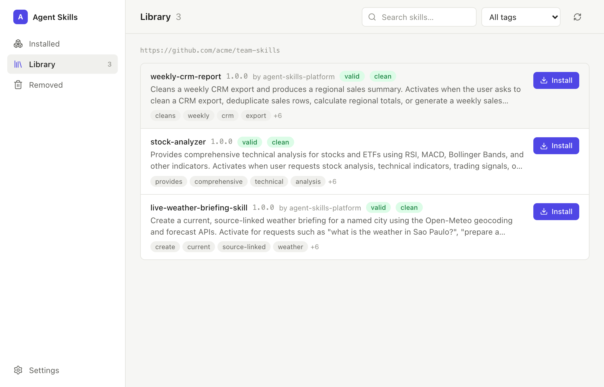

Structure
The package follows the required format and names every referenced file.
From repeated work to a trusted skill
Bring the spreadsheet, report, SOP, link, screenshot, or script you already use. The platform turns it into a reusable workflow your team can inspect, verify, install, and improve.
Build it once. Prove it works. Reuse it safely.
Live API workflow verified
/live-weather-briefing-skilllive API request passed · local Codex package install recorded · other runtime compatibility requires separate evidence
View verification evidenceStart where you are
Pick the outcome you need—not an implementation detail.
Turn examples of real work into a tested skill without writing a technical specification.
Create your first skillReview, approve, publish, update, roll back, and quarantine skills through a governed marketplace.
Run a marketplaceInspect validation, security, evaluation, and representative-run evidence before you depend on a skill.
Review trust boundariesBrowse the team library, read what a skill does, and install it into GitHub Copilot with one click. No terminal, Python, or Git.
Get the desktop appWhat is an Agent Skill?
An Agent Skill is a reusable workflow package that guides an agent from a recognized situation to a verified outcome. It can use retrieved knowledge, MCP tools, APIs, deterministic scripts, and agent judgment, but it is not itself a RAG system, MCP server, or agent runtime.
RAG supplies knowledge. MCP supplies capabilities. The harness supplies execution. A skill organizes them into a governed path toward a verified outcome.
Reason where interpretation is necessary. Execute and verify with deterministic controls where reproducibility matters.
Agent Skills Platform combines LLM reasoning with human-authorized meaning, executable scripts, pinned dependencies, validation, and evals. External models, APIs, and changing data may still vary; the product governs those conditions rather than promising identical outputs.
The whole process
The engineering stays available for inspection. It does not become homework.
The creator reads everything and summarizes the consequential question, trigger, supported decision, required evidence, success measure, and any unresolved business meaning.
Behind the scenes: evidence, data structures, semantics, and authorityFor every external or structured source, Semantic Recon probes the system and creates a pinned contract before implementation begins.
Behind the scenes: source semantics, refusal rules, health and provenanceIt chooses the implementation, writes functional scripts and instructions, and packages the workflow for your agent tools.
Behind the scenes: design, architecture, detection, implementationThe skill is checked as one connected system, then proved with a useful example result.
Behind the scenes: structural requirements and four parallel checks in the skill graphThe skill installs in your detected tool and runs once using supplied material or a safe local example. You inspect the result.
No real emails, publishing, purchases, or production writes for proofEvery skill is checked as one connected system. The skill graph links its instructions, scripts, evaluations, and expected outputs. Two structural requirements confirm that every expected result is tested and every predictable multi-step workflow has one reliable entry point. Four checks—specification, pipeline, security, and evaluation schema—run in parallel. Finally, a representative run proves that the skill produces a useful result. After intake, the marketplace can run the skill inside each installed agent runtime and certify only what an agent actually discovered and followed (agent-run reliability).
Start here
Pick the tool you already use. The page shows where to paste one install action.
Paste in Terminal
For teammates
Built for people who use AI tools but never open a terminal. Paste the library link once; everything else is a click.

Get the installer for macOS, Windows, or Linux from the latest desktop release. It updates itself afterwards.
Paste the team-library link your admin sent. Private repository? Add an access token; it stays in your keychain.
Pick a skill, click Install. It lands in GitHub Copilot (VS Code) by default, or the tool you choose.
Restart VS Code and use the skill in Copilot Chat agent mode. Turn skills off, update, or remove them from the Installed tab.
The governed skill lifecycle
Agent Skills Platform governs portable skill packages. It does not replace your agent runtime, MCP registry, IAM, secret manager, or endpoint controls.
Inspect evidence, expose competing meanings, and ask one bounded human decision at a time before compiling a contract.
Package portable instructions, deterministic helpers, and environment contracts.
Bind evals, safety checks, compatibility, agent-run reliability, and representative outcomes to the release.
Enforce ownership, semantic freshness, approval, versioning, rollback, quarantine, and retirement.
Install exact versions and improve them from consented, privacy-safe usage evidence.
Trust through evidence
The package follows the required format and names every referenced file.
Scripts compile, dependencies are declared, and examples can be scored again later.
When business meaning matters, the skill records who owns the definition, which source wins, and when review expires.
The scanner checks secrets, dangerous patterns, instruction injection, and undeclared endpoints.
A clean scan means no known pattern matched. It is not proof that software is safe.
Human authority remains final: agents may structure, document, test, and apply organizational meaning. They do not establish it.
Semantic Recon is the default source gate: external and structured data are contract-bound before a generated skill can use them. No accuracy improvement is claimed from synthetic scores; no accuracy improvement is claimed unless isolated live evidence supports it.
Received a skill from somewhere else? Ask /agent-skills-platform --audit ./downloaded-skill/ before installing it.
Go deeper when you need it